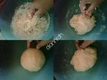
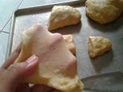
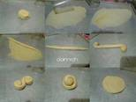

Resep Roti Maryam

Bahan Bahan :
- 250 gr tepung terigu
- 1 butir
- 3 sdm margarin, lelehkan
- 100 ml air hangat
- 2 sdm susu bubuk (otional)
- 1/2 sdt garam
- margarin leleh untuk olesan
- minyak untuk merendam
Langkah Langkah :
- Campur semua bahan menjadi satu

- Uleni sampai kalis jangan takut jika adonan lengket ya, lumuri tangan sesekali dg tepung (tapi jangan menambahkan tepung) uleni terus sampai adonan kalis.

- Kalisnya adonan canai tidak sekalis adonan roti ya, kira2 seperti ini sudah cukup.

- Bagi adonan menjadi 12 bagian. Kalau mau lebih besar bagi jadi 10 bagian.

- Lumuri/rendam adonan dengan minyak goreng (supaya adonan tidak kering) diamkan 1-3 jam (boleh semalaman asal ditutup serbet)

- Setelah di rendam minyak, adonan akan lebih lentur dan kalis daripada sebelumnya, seperti kulit martabak

- Ambil 1 adonan. Pipihkan melebar setipis mungkin. Olesi dengan margarin cair. Gulung memanjang. Linting berlawanan arah spt konde. Tumpuk kedua bagian, terakhir pipihkan lagi. Silahkan gambarnya dilihat (urutannya dari kiri ke kanan lalu balik lagi ke gambar paling kiri)

- Panaskan teflon dengan api kecil aja. Panggang adonan dengan sekali balik, tekan-tekan supaya matangnya rata.
- Canai siap disajikan.. dengan kuah kari atau topping messes, keju serta SKM juga enak